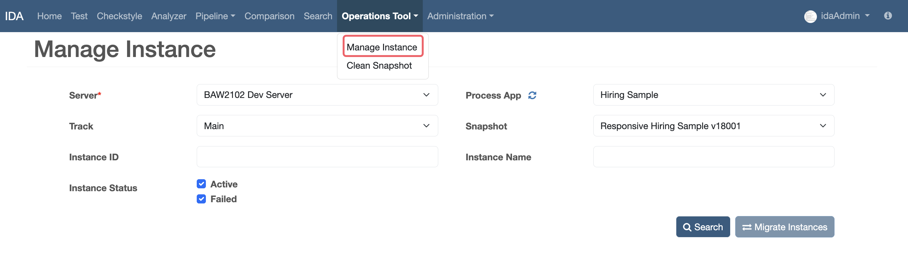
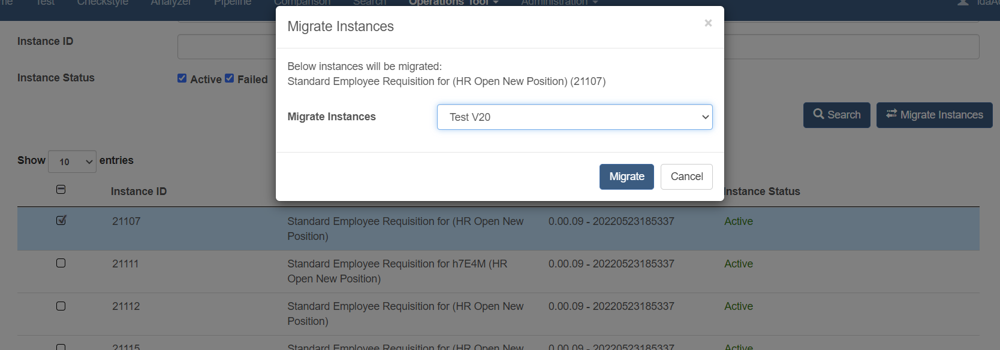
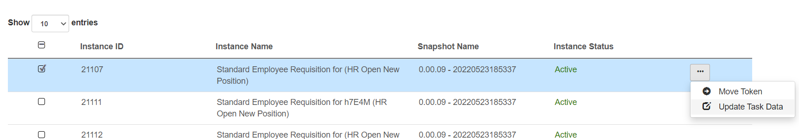
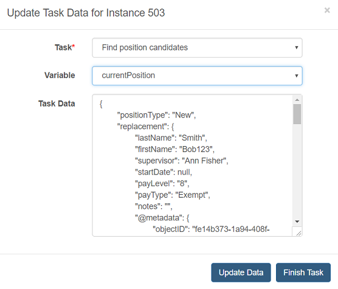
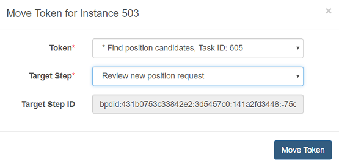
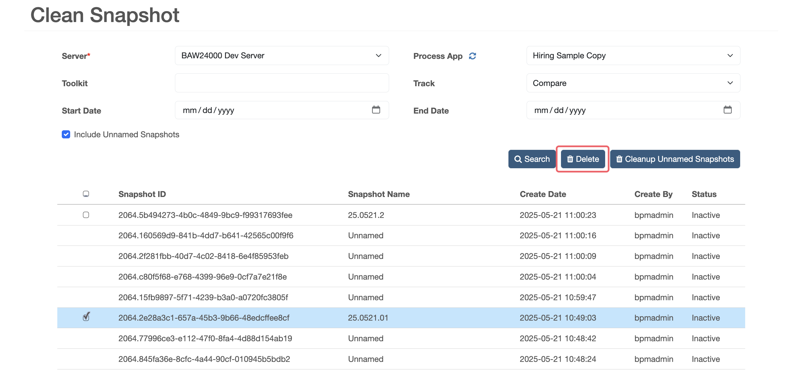
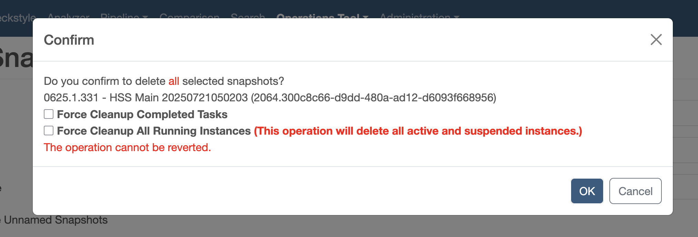
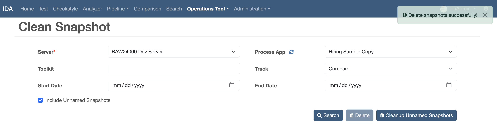

Operations Tool
About this Task
In this task, you will use the Workflow operations tools to manage instances: search for instances, migrate instances between snapshots, update task data, finish tasks, move tokens, and retry failed instances. You can also use it to clean up snapshots.
Search Instance
-
In the Operations Tool menu, click Manage Instance.
-
Fill the instance search form according to the following table.
Parameter Description Server Server environment Process App Process apps of the selected server Branch The branch of the selected process app or toolkit Snapshot The snapshot of the selected branch Instance ID ID of the instance Instance Name Name of the instance Instance Status Status of the instance. Must be Active or Failed or both. -
Click the Search button, you will see the instance table as the search result.

Migrate Instance
-
Select one or more instances in the search result table, choose a target snapshot from the Migrate Instance to drop-down list, then click the Migrate button.

-
As a result, the instance is migrated from the source snapshot (snapshot selected in the search form) to the target snapshot (snapshot selected in the Migrate Instances drop-down list).
Update Task Data
-
Locate the instance row, then click the Update Task Data icon in the Operations column.

- In the pop-up window, select the Task name. The task information is retrieved from the instance details.
- Select the Variable name. The variable information is retrieved from the task selected above.
-
Once the Variable is selected, the Task Data is retrieved. You can update the task data, then click the Update Data button to update the task data.

Finish Task
-
Locate the instance row, then click the Update Task Data icon in the Operations column.
- In the pop-up window, select the Task name. The task information is retrieved from the instance details.
- Select the Variable name. The variable information is retrieved from the task selected above.
-
Once the Variable is selected, the Task Data is retrieved. You can update the task data, then click the Finish Task button to update the task data and finish the task.
Move Token
-
Locate the instance row, then click the Move Token icon in the Operations column.
- In the pop-up window, select the Token name. The token information is retrieved from the instance details.
-
Select the Target Step name, then click the Move Token button to move the instance token to the target step.

Clean Snapshot
-
In the Operations Tool menu, click Clean Snapshot.
-
Fill the snapshot search form by process application or toolkit.
-
Check Include Unnamed Snapshots if you want to search for unnamed snapshots as well.
-
In the result table, select any named snapshots and click Delete to clean the snapshot. Or click Cleanup Unnamed Snapshots to clean up all unnamed snapshots.

-
Confirm whether you want to clean up all completed tasks.

-
After the snapshot is deleted, a success message is shown.
